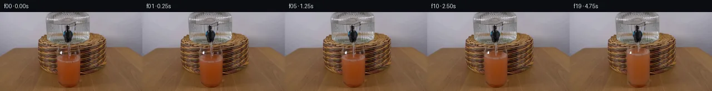

![首帧]()

Round 00
2026-11-05T19:36:02.900378+00:00像素候选变化代码 +257/−0inspection 更新
pixels 12b47bada774140d · code cf276522bc3790a5
查看本轮 generate.py 真实 diff
--- previous/generate.py
+++ current/generate.py
@@ -0,0 +1,257 @@
+"""Photographic pixel continuation, using only local numerical operations.
+
+Run: python generate.py
+No model, external renderer, network access, or image viewing is involved.
+"""
+from pathlib import Path
+import json
+import math
+
+import numpy as np
+from PIL import Image, ImageDraw
+from scipy.ndimage import map_coordinates
+
+from artifact_io import save
+
+
+ROOT = Path(__file__).resolve().parent
+S = 4
+W, H = 256, 144
+SOURCE = np.array(Image.open(ROOT / 'first_frame.png').convert('RGB'))
+assert SOURCE.shape == (H, W, 3)
+YY, XX = np.mgrid[0:H*S, 0:W*S].astype(np.float32)
+X = (XX + .5) / S - .5
+Y = (YY + .5) / S - .5
+BASE = np.repeat(np.repeat(SOURCE.astype(np.float32), S, 0), S, 1)
+CX = 123.0
+INITIAL_LEVEL = 84.5
+BOTTOM = 132.0
+IMPACT_TIME = .31
+
+
+def sample(x, y):
+ return np.stack([
+ map_coordinates(SOURCE[..., c].astype(np.float32),
+ [y, x], order=1, mode='nearest', prefilter=False)
+ for c in range(3)
+ ], axis=-1)
+
+
+def smoothstep(a, b, value):
+ z = np.clip((value-a)/(b-a), 0, 1)
+ return z*z*(3-2*z)
+
+
+def blend(image, color, alpha):
+ alpha = np.clip(alpha, 0, 1)[..., None]
+ return image*(1-alpha) + color*alpha
+
+
+def level_at(t):
+ return INITIAL_LEVEL - 3.0*max(0, t-IMPACT_TIME)
+
+
+def render(k):
+ if k == 0:
+ return SOURCE.copy()
+ t = k/4
+ elapsed = max(0, t-IMPACT_TIME)
+ rise = INITIAL_LEVEL-level_at(t)
+ level = level_at(t)
+ strength = 1-math.exp(-elapsed*8)
+ image = BASE.copy()
+
+ # Preserve the photograph's elliptical surface and orange texture.
+ # Translate the surface; stretch only the body beneath it, keeping the
+ # photographed glass base fixed. Side-wall pixels are never translated.
+ rx, ry = 20.5, 7.0
+ u = (X-CX)/rx
+ arc = np.sqrt(np.clip(1-u*u, 0, 1))
+ radial = np.sqrt((X-CX)**2 + ((Y-level)*3.0)**2)
+ wave = .24*strength*np.sin(radial*1.15-t*12)*np.exp(-radial/18)
+ impact_dent = .38*strength*np.exp(-((X-CX)/3.5)**2)
+ back = level - ry*arc + wave + impact_dent
+ front = level + ry*arc + wave + impact_dent
+ old_front = INITIAL_LEVEL + ry*arc
+ mapped_y = np.where(Y <= front,
+ Y+rise-wave-impact_dent,
+ old_front + (Y-front)*(BOTTOM-old_front)/
+ np.maximum(BOTTOM-front, 1))
+ body_halfwidth = 20.8 - .014*np.maximum(Y-90, 0)
+ side_alpha = 1-smoothstep(body_halfwidth-.45, body_halfwidth+.4,
+ np.abs(X-CX))
+ top_alpha = smoothstep(back-.45, back+.45, Y)
+ bottom_alpha = 1-smoothstep(BOTTOM-.3, BOTTOM+.5, Y)
+ liquid_alpha = side_alpha*top_alpha*bottom_alpha
+ liquid = sample(X, mapped_y)
+
… diff truncated; 170 more lines …